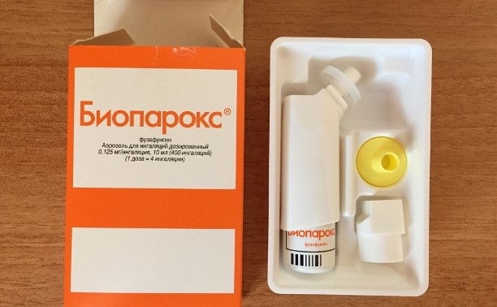
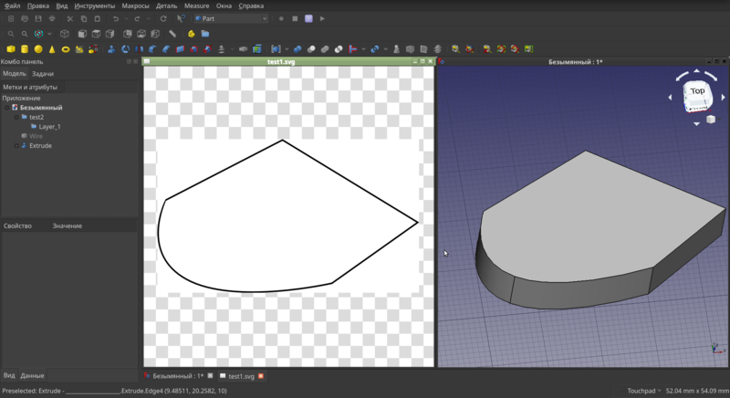
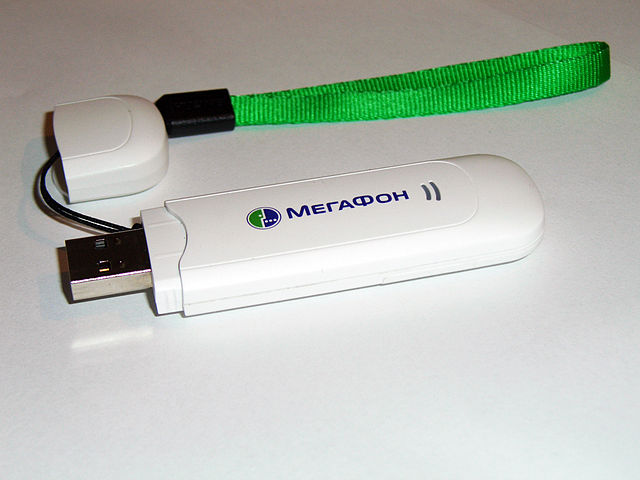

Про чувственные переживания, эмоциональный шум и точку душевного равновесия
Недавно в чатике один человек задал вопрос - что такое для вас чувственное переживание? И мне вспомнился один момент из моей жизни. Мне было лет 15, я летом отдыхал в деревне у деда и однажды спонтанно взял небольшой рюкзак, закинул туда какое-то покрывало, нож, бутылку молока, немного хлеба, овощей и пошёл, куда глаза глядят. Глаза глядели в сторону дороги из посёлка. Пара километров, речка "Бабка", мост через неё, переход через трассу и тропинка, уходящая вверх по холму и идущая чёрт знает, куда через поля мимо другого посёлка. Километр, другой, ярко светит солнце, не жарко и не холодно, дышится легко, идётся ещё легче, вокруг никого и как-то так хорошо на душе, светло. Шёл и шёл себе, а когда немного устал, раскинул на поляне покрывало, да и улёгся на спину. И тут меня посетило именно то, что я могу описать, как чувственное переживание.
Теги: ностальгия, мысли-вслух
Контейнер-пустышка для overlayed сетей docker swarm

В эфире рубрика "Костыли и Велосипеды".
Не так давно добрались мои руки до docker swarm. Только не нужно напоминать о том, что docker на грани банкротства, а кубернетес правит миром окрестрации контейнеров. Подробно объяснять, что это такое, я не буду. И так достаточно много статей и документации на эту тему. По сравнению с kubernetes, swarm намного легче и проще в обращении, не требует установки и практически не требует настройки и, что удобно, позволяет пользоваться почти теми же docker-compose файлами с минимальными изменениями для деплоя. Если контейнеров немного, то городить кластер на kubernetes не имеет смысла, swarm для этого вполне подойдёт.
Про книги, запахи, флешбеки и эстетику

Хорошая знакомая Настя написала пост о воздействии запахов на наши воспоминания и эмоциональное состояние. Начал ей отвечать и как это иногда случается, понял, что мой ответ перерастает в микропост. Да будет так.
Теги: мысли-вслух, ностальгия
Про прогресс, технологии и флешки
На работе недавно одна девушка (Д) написала в чат, что ей нужна флешка и у нас состоялся следующий диалог:
Теги: мысли-вслух
Автоматическая перезагрузка OpenWRT роутера при отсутствии интернета N секунд
У меня дома подключен интернет от Beeline, но периодически с ним возникают проблемы. Что тому виной - не могу понять. Периодически коннект разрывается, роутеру выдаётся по DHCP новый IP адрес, l2tp отрабатывает, получает свой адрес, но до шлюза через l2tp интерфейс пакеты идут только в одну сторону. Обратно приходит порядка 60 байт чего-то (не успел поймать), затем тишина. Решил написать небольшой простой скрипт, который будет проверять интернет и если его нет более 5ти минут, будет перезагружать роутер.
Теги: shell, networking, openwrt
Решение проблемы импорта чертежей из Inkscape во FreeCAD

Есть два приложения для linux, которые мне очень нравятся - это Inkscape и FreeCAD. Первый - двухмерный редактор векторной графики. Второй - трёхмерный редактор, который я часто использую для создания моделей, затем отправляющихся на 3d печать. Оба OpenSource и оба хороши тем, что портированы в том числе под Windows и MacOS. И вот, ещё во времена debian седьмой версии не было никаких проблем, чтобы из поставляющегося в составе дистрибутива Inkscape что-то экспортировать в DXF и открыть это во FreeCAD. Точнее, импортировать было можно, но после импорта мы получали множество объектов типа Polyline и Spline, которые затем объединялись и могли быть конвертированы в четрёж, т.е. в Draft. С какой-то версии FreeCAD при попытке перевода объединения линий в чертёж, создавались пустые чертежи в том случае, если среди линий были кривые, т.е. объекты типа Spline. Я долго страдал по этому поводу, ведь есть вещи, которые куда удобнее и приятнее нарисовать в Inkscape и затем импортировать во FreeCAD, чем рисовать непосредственно во FreeCAD'е. Всё дело в том, что в Inkscape намного удобнее реализован инструмент работы с кривыми Безье, направляющими и сеткой.
Небольшой лайфхак для отключения питания Ender3 от Octoprint
С того момента, как я подключил свой 3d принтер Creality Ender3 к Orange Pi PC и настроил octoprint для удалённой печати, меня очень раздражала одна особенность реализации платы управления эндера. В случае, когда питание принтера было выключено, плата продолжала питаться по линии +5в через USB разъём. Дисплей светился, на нём отображалась информация с датчиков температуры (хоть и не настолько контрастно, как при включенном питании), можно было перемещаться по меню, а вентилятор охлаждения хотенда постоянно вращался (не в полную силу конечно, но это тоже создавало лишний звуковой фон). Более того, octoprint не терял соединения с принтером, и если при этом включить нагрев стола или хотенда, изображение на дисплее становилось менее различимым, но подсветка продолжала работать. Другими словами, есть явная недоработка со стороны Creality и вчера я это исправил, потратив на это примерно 0 рублей, сотые доли копейки и три минуты.
Теги: 3d-printing
Быстрая разблокировка старых 3g модемов под linux

Я просто оставлю это здесь, как памятку, возможно ещё пригодится. Подобных мануалов масса, но в основном они ориентированы на наличие windows, в linux это оказалось даже проще. У меня есть отдельная коробочка, куда я складывал попадающие ко мне 3g/4g модемы на случай, если мне они понадобятся в будущем. И вот, сегодня я нашёл этот ящик пандоры и он оказался очень кстати. Среди прочих моделей, отыскался один Huawei e1550 от Мегафон. Одна из лучших в своё время моделей, легко поддавалась перепрошивке, можно было использовать как SIP транк и вообще, делать с ним что угодно. Но естественно, он был залочен на использование симкарт от мегафона. Всё, что нам потребуется - браузер, консоль и пакет minicom (sudo apt-get install minicom, в случае, если вы пользуетесь debian-based системой).
Теги: linux
О разнице в восприятии, понимании и формулировке задач

Существуют такие вещи, о которых ты знаешь на протяжении всей своей жизни, но настолько к ним привык, что сложить 2 + 2 и сделать из этого какие-то выводы просто не приходит тебе в голову. Возможно, что где-то на подсознательном уровне ты это даже учитываешь и это оказывает влияние на твоё поведение и принятие тобой решений, а потом сам не можешь понять, почему ты поступил так, а не иначе. И вот, в один прекрасный момент ты постигаешь истину. Это со мной и случилось сегодня утром.
Теги: жизненное
О правильной остановке внешних дисков и победившей контейнеризации

Надо оставить тут заметку, чтобы не потерять. Возникла у меня проблема - накрылась в очередной раз от периодических отключений питания и отсутствия бесперебойника файловая система на домашнем сервере. Можно было конечно восстанавливать её работоспособность, но объективно было пора переходить на новую. Так как сервер в своё время стоял под телевизором и какое-то время выполнял роль ТВ приставки с Kodi и прочей мультимедией, то на сервере было много всего лишнего, поэтому наиболее идеологически верным было поставить всё с нуля и перенести лишь необходимое. До этого я пользовался proxmox, но уже давно мне не нужны были честные виртуальные машины (а когда они будут нужны, проще на рабочей машине поднять виртуалку в VirtualBox), а все необходимые мне сервисы я давно перенёс в докер.